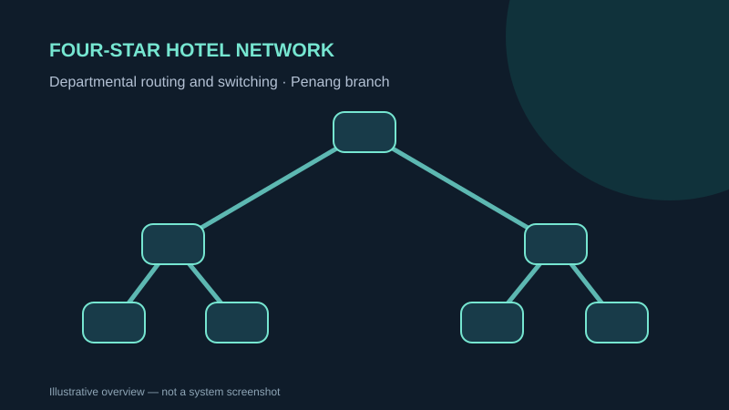

NETWORKING · CISCO PACKET TRACER
Four-Star Hotel Network Design
A departmental network topology and addressing design for branches of a hotel network.
Cisco Packet TracerRoutingSwitchingIP addressing

Concept illustration · descriptive artwork, not a screenshot of the submitted system
OVERVIEW
What the project is about
The project models hierarchical network connections for multiple hotel locations. The submitted report assigns the Penang branch work to Zuhayb.
MY DOCUMENTED WORK
My contribution
- Designed and documented the Penang branch's topology and rationale.
- Modelled Reception, Finance, HR and Server Room segments using a hierarchical/tree-style design.
- Explained endpoint connectivity and IP addressing choices.
METHODS & DELIVERABLES
Key work covered
- Hierarchical departmental switching
- Router uplinks and wired/wireless endpoints
- Subnet planning and separation of departmental traffic
- Branch design and configuration documentation
EVIDENCE & SCOPE
What this portfolio does and does not claim
The Packet Tracer .pkt was uploaded separately but is withheld from this public repository until its device configurations and possible embedded passwords are checked.